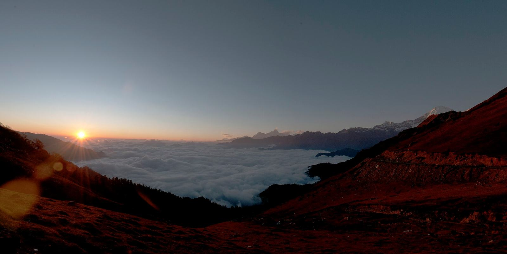
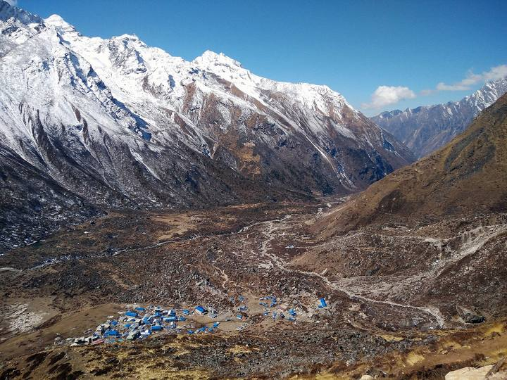
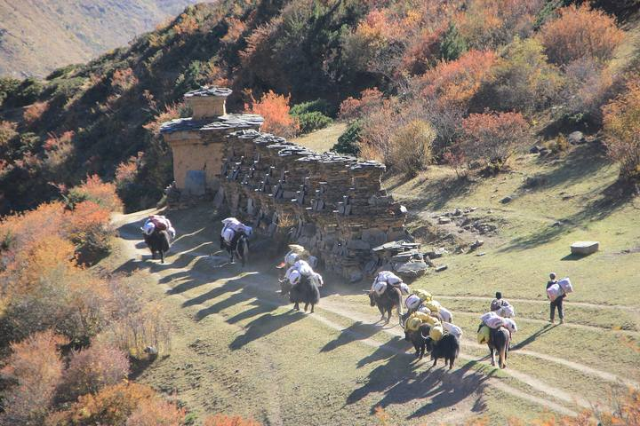
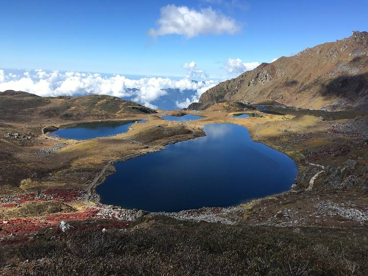

Ruby Valley
Eight days from Syabrubesi through Gatlang and over the 3,842 m Pangsang La to Tipling, Shertung and Chalish below Ganesh Himal, sleeping in family homes, then out by jeep to Dhading Besi.


- Duration
- 7–9 days
- Distance
- 55 kmapproximate
- Highest point
- 3,842 mPangsang La · 12,605 ft
- Highest night
- 3,271 mSomdang
- Difficulty
- ModerateHomestays · Teahouse lodges
- Best months
- Mar–Apr, Oct–Nov
Is this trek right for me?
The walking
8 days in all. Most walking days are 5 to 6 hours on foot, and the longest is about 8 hours. Five to seven hour days with real climbs, usually below 4,500 m.
The height
The highest night is at 3,271 m, and the plan gains height quickly on the way. Many people feel it. The day-by-day plan marks where: take that day slowly, or split it.
Where you sleep
In lodges every night: a simple twin room, a shared bathroom and hot meals in a warm dining room.
The help you need
The rules require a licensed guide on this route. A porter to carry your bag is your choice.
Overview
Ruby Valley is the name given to the upper Ankhu Khola in northern Dhading, under the south side of Ganesh Himal. The name is said to come from rubies and rock crystal once dug from these slopes; an abandoned lead and zinc mine still stands near Somdang, and no stones are for sale on the trail. What brings trekkers is the villages. In Tipling, Shertung and Chalish, Tamang, Gurung, Ghale and Kami families farm steep terraces and take guests into their own houses. Only a few hundred foreign trekkers come in a year.
The route joins the Tamang country of Rasuwa to the Dhading hills. From Gatlang it climbs past the small lake of Parvati Kunda and over the Khurpu Bhanjyang, at about 3,720 m, to the old mining camp of Somdang. Next day it crosses the Pangsang La at 3,842 m, a broad grassy saddle with Ganesh Himal close to the north and Manaslu and the Langtang peaks on either hand, and drops all the way to Tipling. Three easy days through the villages lead to the jeep road. The two pass days are long, six to eight hours each, and the first raises your sleeping height by 1,000 m.
Know what you are getting. Rooms are in homestays and very simple lodges, the food is what the family eats, and a rough road now reaches Tipling and the pass from the Dhading side, so parts of the old trail are dusty track. The Bhote Koshi flood of 26 August 2026 also damaged both road ends of the trek: Syabrubesi, and the highway bridge that serves Dhading Besi. The trail itself was reported open again on 25 October 2026, over a temporary footbridge at Syabrubesi. Confirm how you will reach the start and leave the finish before you fix your dates.
Highlights
- Homestay nights in Tipling, Shertung and Chalish
- Ganesh Himal, Manaslu and the Langtang peaks from the Pangsang La
- Gatlang's stone houses and the sacred lake of Parvati Kunda
- Tamang, Gurung and Ghale villages that keep their own dances and shaman rituals
- Rhododendron forest on the climb to the Khurpu Bhanjyang
- Only a few hundred foreign trekkers a year
Moderate: Two long days over passes of about 3,700 and 3,850 m, with a basic night between them, then easy walking from village to village; nothing technical, but the lodging is simple throughout.
Altitude profile
Height at the end of each day, with the high points in between. Dots are the places you sleep.
1 night gains height faster than the usual guideline. That is common on standard itineraries, but it is where problems start. Check how you feel before each of these climbs.
- Day 3, Somdang: A climb of 1,033 m in one day, to sleep at 3,271 m. Go slowly, drink plenty, and say so if you get a headache.
Try adding a night in the acclimatization checker · Check your symptoms
Day by day
About 23–31 h of walking in total. Times are for a steady pace with short breaks; add more for photos and tea.
-
Day1
Drive from Kathmandu to Syabrubesi
The same long road day as for Langtang, through Trishuli Bazaar and Dhunche, where the park permit is checked. Since the August 2026 flood vehicles have been stopping short of Syabrubesi, so you may finish on foot or sleep in Dhunche. Fix the plan with your agency before you leave Kathmandu.
2 places to stay in Syabrubesi, such as White House and Kerung Himalaya. See them
Travel day- Sleep at
- 1,460 m
- Change
- +60 m
- Drive
- 7–9 h
-
Day2
Syabrubesi to Gatlang
Syabrubesi to Rongga Bhanjyang to Goljung to Gatlang
A steep two-hour climb west to the Rongga Bhanjyang saddle, then a gentler traverse above the terraces of Goljung to Gatlang, partly on a dirt road. The lodges and homestays here are the most comfortable beds of the trek. If you arrive early, walk through the old houses to the gompa.
8 places to stay in Gatlang, such as Stone Woodland Guesthouse, Langtang View Guest House and Langatang View Guest House. See them
- Sleep at
- 2,238 m
- Change
- +778 m
- Walking
- 5–6 h
-
Day3
Gatlang to Somdang over the Khurpu Bhanjyang
Gatlang to Parvati Kunda to Khurpu Bhanjyang to Somdang
An hour up to Parvati Kunda, then a long climb through pine and rhododendron forest to the herders' huts at Yuri Kharka, the usual lunch stop, and on to the pass at about 3,720 m. An hour or more downhill brings you to the simple lodges at Somdang. You sleep 1,000 m higher than last night, so expect a mild headache.
3 places to stay in Somdang, such as Ghale Kanchha Hotel, Somdang Valley Lodge and Somdang Guest House. See them
Pass day Watch this gainA climb of 1,033 m in one day, to sleep at 3,271 m. Go slowly, drink plenty, and say so if you get a headache.
- Sleep at
- 3,271 m
- Change
- +1,033 m
- High point
- 3,720 m
- Walking
- 6–8 h
-
Day4
Somdang to Tipling over the Pangsang La
Somdang to Pangsang La to Tipling
Two to three hours up, on trail and stretches of rough road, to the open saddle of the Pangsang La, where a simple lodge stands and the view takes in Ganesh Himal and Manaslu. Then the knees take over: about 1,750 m of descent through forest and pasture to the terraces of Tipling. Start early and carry lunch.
2 places to stay in Tipling, such as Tipling homestay and Edwin Tamang Homestay. See them
Pass day- Sleep at
- 2,078 m
- Change
- −1,193 m
- High point
- 3,842 m
- Walking
- 6–8 h
-
Day5
Tipling to Chalish by way of Shertung
Tipling to Shertung to Chalish
A short day. Drop to the bridge over the Adha Khola, climb to Shertung, a large Tamang village on the facing hillside, and walk on down to Chalish, where Gurung, Ghale and Kami families run the homestays. Give the afternoon to the village, and ask your host whether a dance evening can be arranged.
- Sleep at
- 1,674 m
- Change
- −404 m
- Walking
- 3–4 h
-
Day6
Chalish to Borang
An easy walk through forest and terraced fields to Borang, which some itineraries time at two hours and others at five. With time in hand, spend the morning in Chalish and set out after lunch. Have your host or guide book jeep seats for tomorrow as soon as you arrive.
2 places to stay in Borang, such as Hotel Ruby Valley. See them
- Sleep at
- 1,650 m
- Change
- −24 m
- Walking
- 3–5 h
-
Day7
Borang to Dhading Besi by jeep
Walk down to wherever the jeeps are starting that season, often by the Lishne Khola below the village, then ride five to seven hours on a rough hill road to the district town. It is a slow, dusty journey and the worst road of the trip. Dhading Besi has ordinary hotels, hot water and cash machines.
58 places to stay in Dhading Besi, such as Gurung Guest House, Ruby Valley Guest House and Purbuli Hotel And Lodge. See them
Travel day- Sleep at
- 600 m
- Change
- −1,050 m
- Jeep
- 6–8 h
-
Day8
Drive from Dhading Besi to Kathmandu
In normal times a sealed road runs down to Malekhu on the Prithvi Highway and east to Kathmandu. The bridge over the Trishuli there was lost in the August 2026 flood and traffic has been using a longer detour, so ask about the route in Dhading Besi and allow most of the day.
Travel day- Sleep at
- 1,400 m
- Change
- +800 m
- Bus
- 3–5 h
Ways to change it
Seven days
Walk from Chalish through Borang to the roadhead and ride to Dhading Besi the same day: about three hours on foot and five or more in the jeep. It is a tiring day, but it saves a night.
Walk out to Darkha
The older ending carries on down the valley on foot, a day's walk from Borang to the village of Darkha, and reaches the jeep stand at Darkha Phedi the next morning. It makes nine days, with much of the way now beside the dirt road.
From the Dhading side
The trek can be walked in reverse, starting with the jeep from Dhading Besi, and agencies turned to this after the flood, when Syabrubesi could not be reached. The climb from Tipling to the Pangsang La is then about 1,750 m in a day, and Somdang is a further two hours down the far side.
Ride to Gatlang
A dirt road links Syabrubesi with Gatlang, and when it is open a jeep saves the first walking day. It was reported damaged after the 2026 flood, so ask before you count on it.
Route map
The map loads when you scroll here. It needs a connection the first time; tiles you have viewed stay available offline.
The solid line follows footpaths mapped in OpenStreetMap. It is a guide to where the route goes, not a navigation track: trails are rerouted after landslides, so follow the signs and people on the ground. Marker positions come from OpenStreetMap where we could match a place, and from our own estimates elsewhere.
Download the trail for a map app A GPX file with 53 km of mapped path and every stop. It opens in free apps such as Organic Maps.
When to go
- January: difficult
- February: difficult
- March: best time
- April: best time
- May: good
- June: difficult
- July: difficult
- August: difficult
- September: good
- October: best time
- November: best time
- December: good
October and November are the clearest months, and March and April bring rhododendron on the way up to both passes. December is cold but usually open. In January and February snow can block the Khurpu Bhanjyang and the Pangsang La, and the Somdang lodges may be shut. May is hot and hazy in the villages. In the monsoon the forest is full of leeches and both access roads are at their worst.
Permits and guide rules
Guide required. You enter through Langtang National Park, where the permit is checked at Dhunche, and the Nepal Tourism Board has required foreign trekkers to hire a licensed guide since April 2023, though checks on the trail are inconsistent. The Dhading villages lie outside any park. Take a guide in any case: homestays have no signboards and need a phone call ahead, few people on the route speak English, and since the 2026 flood only someone in touch with the villages knows which roads and bridges are open.
Langtang National Park
National parkLangtang National Park entry permit · Department of National Parks and Wildlife Conservation
| Foreign nationals | NPR 3,000 | person, single entry |
| SAARC nationals | NPR 1,500 | person, single entry |
| Nepali citizens | NPR 100 | person |
Where: At the park checkpoint in Dhunche on the drive to Syabrubesi, or in advance at the Tourist Service Centre in Bhrikutimandap, Kathmandu.
The Nepal Tourism Board and current guides agree on NPR 3,000 and NPR 1,500. Some agencies add 13% VAT to the foreigner fee (NPR 3,390); we could not confirm that it is charged, so carry the difference. NPR 100 for Nepali citizens is the standard mountain-park rate; the tourism board's page still shows an older figure.
TIMS card
RegistrationTrekkers' Information Management System card · Nepal Tourism Board and the Trekking Agencies' Association of Nepal
| Foreign nationals | NPR 2,000 | person, per trek |
| SAARC nationals | NPR 1,000 | person, per trek |
Where: Only through a registered trekking agency, which applies in the Nepal Tourism Board's online system with your route and your guide's details. Individual trekkers can no longer buy one over the counter.
Since the revised rules of 31 March 2023 the card is tied to trekking with a licensed guide on the tourism board's listed routes. It is not used in Khumbu, where the municipality's Trek Card took its place in 2017. For restricted areas the published rules pull both ways: TAAN's pages say TIMS applies in every trekking area, restricted ones included, yet also list visitors holding Department of Immigration permits among those who do not need one, and agencies disagree. Your agency, which is compulsory there anyway, will know what the checkposts on your route ask for. Reports from 2025–26 describe patchy checks of the card, especially in Annapurna.
Agency required
Fees and rules change, sometimes mid-season. Treat these as a planning guide and confirm with the Nepal Tourism Board, the Department of Immigration or a registered agency before you travel. Last reviewed 2026-11. All permits and fees
Getting there
The classic start is Syabrubesi, seven to nine hours from Kathmandu by bus. The finish is Dhading Besi, three to five hours from Kathmandu, reached by a long jeep ride from the roadhead below Borang. Both were hit by the flood of 26 August 2026: the road was cut short of Syabrubesi, with vehicles stopping at Dhunche, and the Trishuli bridge near Malekhu that links Dhading Besi to the Prithvi Highway was swept away, leaving a detour on back roads. We found no report by November 2026 that either had been fully restored. Ask your agency what is open at both ends in the week you travel.
-
Bus: Kathmandu to Syabrubesi · 7–9 h
The usual approach, from Machhapokhari in Kathmandu. Reported closed short of Syabrubesi since the August 2026 flood; check whether it has reopened.
-
Jeep: Kathmandu to Dhunche · 5–7 h
The roadhead in use after the flood, for light vehicles only. Syabrubesi is about 15 km further on a damaged road; ask what can be driven and what must be walked.
-
Jeep: Borang to Dhading Besi · 5–7 h
Local jeeps on a rough hill road down the Ankhu Khola valley. They leave early and fill up, so have your host book seats. Landslides close the road in and after the monsoon.
-
Bus: Dhading Besi to Kathmandu · 3–5 h
In normal times, frequent buses by way of Malekhu and the Prithvi Highway. Since the flood they have used a longer detour; ask in Dhading Besi which way they are going.
- Gateway
- Kathmandu
- Walk starts
- Syabrubesi · 1,460 m
- Walk ends
- Borang · 1,650 m
Hazards on this route
Flood damage at both road ends
The flood of 26 August 2026 wrecked much of Syabrubesi, cut the road to it and swept away the Trishuli bridge that links Dhading Besi to the highway. The villages and passes of the trek stand far above the river and were not flooded. Do not set out without current word on where vehicles stop, which footbridges are in use and how you will get out.
A fast climb to Somdang
Gatlang to Somdang takes you over 3,700 m and raises your sleeping height by about 1,000 m in a day. A headache and a poor night at Somdang are not unusual. If you are properly ill in the morning, go back down to Gatlang; do not carry on over a second, higher pass.
Snow and cloud on the passes
The Khurpu Bhanjyang and the Pangsang La hold snow in winter and after spring storms, and cloud often sits on them by midday. Shelter is scarce on both pass days. Cross early, keep the group together, and wait a day if the passes are white.
Long, steep descents
The drop from the Pangsang La to Tipling is about 1,750 m in one afternoon, on forest path, stone steps and loose road. It is slippery when wet. Use poles and keep something in reserve for the last hour.
Slow evacuation
Between Gatlang and the Dhading roadhead there is no hospital, and phone signal comes and goes. The nearest hospitals are in Dhunche and Dhading Besi, each a long drive on a damaged road. Carry a proper first-aid kit and insurance that covers helicopter rescue.
Practical tips
- Carry all your cash from Kathmandu, in small notes. There is no cash machine on the trek until Dhading Besi.
- Bring a sleeping bag. Homestay bedding is thin, and Somdang is cold at 3,271 m.
- You eat with the family, at their hours and from their pot. Agree the price for bed and meals when you arrive.
- Carry lunch and at least two litres of water on both pass days. Tea shops are few and may be shut.
- Dress modestly in the villages, and ask before photographing people, shrines or a shaman at work.
- Keep a spare day or two at the end. The jeep road out of the valley closes after rain, and the detour to Kathmandu is slow.
Cash machines on the route: Dhading Besi. They run out of cash and go offline, so carry what you need from Kathmandu. Work out how much.
Plan this trek
Choose your dates and see the whole trip on one page: where you sleep each night, who can help you, what it may cost and the papers you need. Then ask for a price.
More tools for this trek
Who can help you on this trek
The rules require a licensed guide on this route. A porter to carry your bag is your choice.
-
A trekking company that arranges everythingOne price for everything on the trek. Ask two or three companies.
-
A guide, and a porter to carry your bagAbout USD 25 to 40 a day for the guide and USD 18 to 25 for the porter.
-
A guideAbout USD 25 to 40 a day.
-
A porter to carry your bagThe rules require a licensed guide on this route.
-
On your ownThe rules require a licensed guide on this route.
Do you work on the Ruby Valley route as a guide, porter or company? Join TrekkSewa.
Quick answers
How long does the Ruby Valley trek take?
Most people take 7–9 days. The itinerary on this page is 8 days.
How high does the Ruby Valley trek go?
The highest point is Pangsang La at 3,842 m (12,605 ft). The highest place you sleep is Somdang at 3,271 m.
How difficult is it?
We grade it moderate. Two long days over passes of about 3,700 and 3,850 m, with a basic night between them, then easy walking from village to village; nothing technical, but the lodging is simple throughout.
Which permits do I need?
Langtang National Park, TIMS card. Fees and where to get each one are listed in the permits section above.
Do I need a guide?
You enter through Langtang National Park, where the permit is checked at Dhunche, and the Nepal Tourism Board has required foreign trekkers to hire a licensed guide since April 2023, though checks on the trail are inconsistent. The Dhading villages lie outside any park. Take a guide in any case: homestays have no signboards and need a phone call ahead, few people on the route speak English, and since the 2026 flood only someone in touch with the villages knows which roads and bridges are open.
When is the best time to go?
Mar–Apr, Oct–Nov are best. October and November are the clearest months, and March and April bring rhododendron on the way up to both passes. December is cold but usually open. In January and February snow can block the Khurpu Bhanjyang and the Pangsang La, and the Somdang lodges may be shut. May is hot and hazy in the villages. In the monsoon the forest is full of leeches and both access roads are at their worst.
Published information on this route is limited. Treat every figure as approximate and confirm with a local operator. Reviewed 2026-11. Trails, lodges and rules change; confirm locally before you rely on any detail. Report a correction.
Similar treks
More in Langtang Langtang
Langtang
Tamang Heritage Trail
A village loop below the Tibetan border, with nights in Tamang homes

LangtangLangtang Valley
Up a glacial valley to Kyanjin Gompa, a day's drive north of Kathmandu

ManasluTsum Valley
A Buddhist side valley of Manaslu, walked to the monastery at its head

LangtangPanch Pokhari
A long forested ridge from Chautara to five sacred lakes at 4,100 m